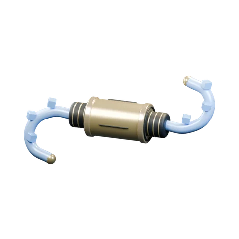
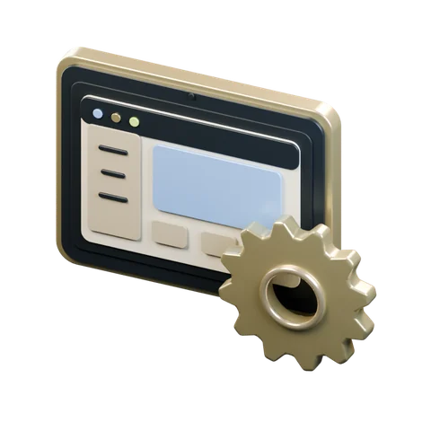
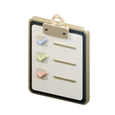
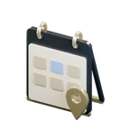
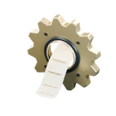
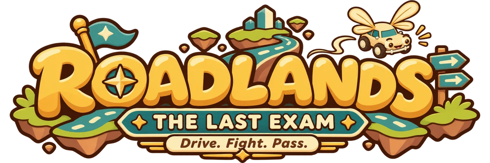

Daten & Schnittstellen
Daten an einem Ort.
Exporte automatisch einlesen, Angaben prüfen und für Berichte bereitstellen.
Datenintegration im DetailWähle deinen Ansprechpartner
Wir verbinden Daten, entwickeln Anwendungen und Web-Apps und geben KI-Workshops für Unternehmen.
Unser Ziel ist ein komplett automatisiertes Unternehmen. Die Werkzeuge dafür bauen wir auch für dich, einzeln oder verbunden in einem Projekt.

Daten & Schnittstellen
Exporte automatisch einlesen, Angaben prüfen und für Berichte bereitstellen.
Datenintegration im Detail
Anwendungen
Interne Anwendungen entwickeln und mit vorhandenen Systemen verbinden. Ein Vorgang, ein Arbeitsstand.
Web-Apps aus ListenKI-Workshops
An eigenen Aufgaben üben, hilfreiche Anwendungen finden und Antworten kritisch prüfen.
Einblick aus der HochschuleKleine Web-Apps zum klar definierten Festpreis. Für Betriebe direkt oder als White-Label für Agenturen.

Auftrags- und Projektlisten
Termin- und Buchungsportale
Automatisierte Abläufe und FormulareFür Agenturen
Wir entwickeln kleine Anwendungen im Hintergrund unter deinem Namen. Du bleibst Ansprechpartner deines Kunden und kalkulierst deine eigene Marge.
Festpreis und Lieferzeit nach abgestimmtem Umfang, Schnittstellen und Erweiterungen separat. Preise nennen wir dir im Gespräch.
1 von 4
Beim Abspielen wird eine Verbindung zu YouTube hergestellt. Datenschutz. Auf YouTube ansehen
Beim Abspielen wird eine Verbindung zu YouTube hergestellt. Datenschutz. Auf YouTube ansehen

Lernen als Abenteuer: ein Lernspiel für die IHK-Sachkundeprüfung nach § 34i GewO.
Gleicher Lernstoff, gleiche Fragen, ohne Spielelemente: die ruhige Oberfläche von iQuest für die Sachkundeprüfung nach § 34i GewO.
24 Level, Bosskämpfe und eine Prüfungssimulation. Von Kim entwickelt und gemeinsam mit Maksim weitergedacht und weiterentwickelt.
Für alle, die lieber ohne Spiel lernen. Zwischen Classic und Spiel kannst du jederzeit umschalten.
Zwei Werkzeuge, die Kim für seinen eigenen Arbeitsalltag gebaut hat. So sehen Web-Apps aus, die aus Listen entstehen.
Banken, Ansprechpartner, Terminprotokolle und Wiedervorlagen an einem Ort. Am Rechner und auf dem Handy.
Ansicht vergrößernZeiterfassung, Aufgaben, Telefonliste und Terminvereinbarung für ein kleines Team.
Ansicht vergrößernDie Ansichten zeigen Beispieldaten.

Dein Zuhause. Dein Team. Dein Spiel.
heimello. verteilt Aufgaben nach Zeitbudget, Zuständigkeit und Rhythmus. Erledigte Aufgaben bringen Punkte, bis hin zu Wochenrennen mit verbundenen Haushalten. Auf dem gemeinsamen Tablet hat jede Person ihr eigenes Profil.


Eine niedergebrannte Fahrschulinsel. Ein alter Fahrlehrer, der nicht mehr neu anfangen kann. Und du, der ihr eine Zukunft geben soll.
Ein 3D-MMORPG und Entwicklungsprojekt von Kim. „The Last Exam“ ist die geplante erste Version. Einen festen Veröffentlichungstermin gibt es noch nicht.
Hochschule Esslingen, 28. Januar 2026
Die Hochschule Esslingen berichtet über Maksims KI-Workshops und die gemeinsame Arbeit an praktischen Aufgaben. Der Artikel bezieht sich auf seine damalige Hochschultätigkeit und ist keine Kundenreferenz.
„Es bereitet mir besonders viel Freude, mich mit den aktuellsten KI-Themen zu beschäftigen und mein neu gewonnenes Wissen weiterzugeben.“
Maksim leitet die Projekte. Bei Bedarf kommen nach Absprache weitere Freelancer dazu.
Projekte & Entwicklung, Gründer
Maksim leitet dein Projekt und bleibt dein Ansprechpartner. Er hat bei P3 an Data-Science-Projekten und bei TeamViewer an einem BERT-Sprachmodell gearbeitet. Im vierköpfigen Team von findyouraitool.com war er für das Produkt und die Cloud-Architektur mitverantwortlich.
Vertrieb & Partnerschaften
Kim ist dein Ansprechpartner für neue Vorhaben, Web-Apps und Agentur-Partnerschaften. Er kommt aus dem Handwerk und dem Finanzvertrieb und weiß, wo im Arbeitsalltag Zeit verloren geht. Ab 1. Februar 2027 ist er Partner bei Juschkin Labs.
Ein Test aus einem eigenen Rechercheprojekt: wiederholte Importe, geänderte Daten und ausgefallene Quellen, mit künstlichen Daten. Mit KI-Unterstützung entwickelt und geprüft, den zweiten Lauf prüfte eine separate KI-Instanz. Eine technische Arbeitsprobe, keine Kundenreferenz und keine Messung unter Last.
Testbericht lesenÖffentliche Übungsnotebooks und ein Dokumentenassistent aus der Hochschullehre. Der Code ist einsehbar. Der Assistent ist ein Lehrbeispiel, keine im Unternehmen eingesetzte Wissensdatenbank.
Workshopmaterial ansehenBeschreib kurz deine Aufgabe, die beteiligten Systeme und deinen Zeitrahmen. Wir besprechen mit dir den nächsten Schritt.
kontakt@juschkinlabs.de